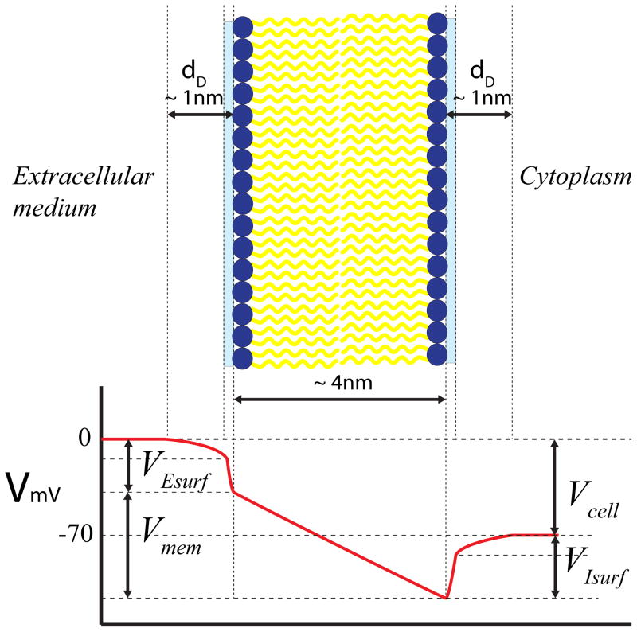
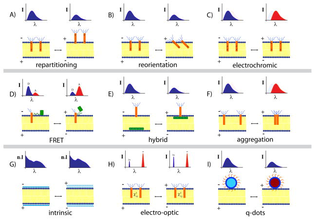
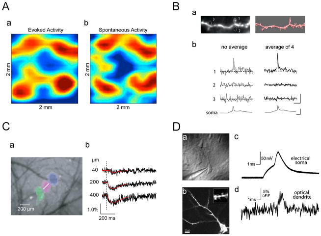
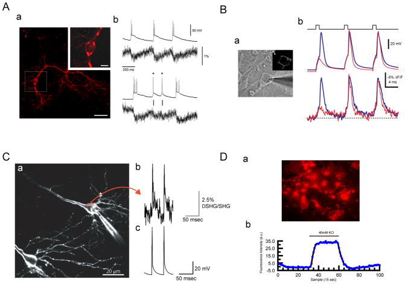

论文精读说明文档
Imaging Voltage in Neurons
这篇 Primer 讲的是：怎样用光学方法读出神经元膜电位，以及为什么这件事一直很难。
论文信息
Neuron - 2011 - Peterka - Imaging Voltage in Neurons.pdf
一句话定位
这篇文章可以理解成“光学版 patch-clamp 的技术地图”：目标是不用电极、直接从光信号重建神经元膜电位，但膜电位信号只存在于几纳米厚的膜附近，传感器定位、光子数、光毒性、背景膜、校准和副作用都会把问题变复杂。
为什么值得读
钙成像能很好地看群体活动，但它更像是动作电位之后的化学后果，时间上更慢，也容易漏掉阈下突触事件。膜电位成像想直接看电信号本身：动作电位、阈下 EPSP/IPSP、树突和树突棘局部电压、神经元群体的同步活动，都有机会被同一类读出方式统一起来。
对你正在做的电刺激和差分测量来说，这篇文章的价值不在“马上照着做实验”，而在它把一个核心问题讲清楚了：只要你想测膜电位，测量系统本身就会影响膜、引入背景、带来校准问题。这和电极测量里的串联电阻、封接、共模伪迹、刺激伪迹是同一类工程问题。
术语先说明
图文导读




机制横向对照
| 路线 | 读出的是什么 | 优点 | 主要难点 | 和你的问题的关系 |
|---|---|---|---|---|
| 有机电位敏感染料 | 荧光强度、吸收、光谱或寿命变化 | 种类多，历史长，速度可很快 | 背景膜染色、光毒性、膜电容改变、定量校准难 | 像电极一样，传感器本身会扰动被测膜；不能只看信号大不大。 |
| 基因编码电压指示器 | 蛋白构象或 FRET 变化导致的荧光变化 | 细胞类型靶向好，适合神经环路问题 | 早期信号通常小，响应速度可能滤掉快动作电位 | 适合“选特定细胞测”的逻辑，但不能自动解决时间带宽问题。 |
| 混合传感器 | 有机分子和蛋白/染料对之间的能量转移 | 灵敏度设计空间大 | DPA 等成分可能增加膜电容，外源加入也会引入药理副作用 | 和刺激实验类似：外加成分改善读数，也可能改变膜的真实响应。 |
| SHG | 膜界面的二倍频光信号 | 界面特异性强，理论响应快，背景少 | 信号弱、需要高峰值光强、仍可能有光损伤 | 很适合从“膜界面电场”角度理解电压，而不是把电压当成细胞内平均量。 |
| 内源光学信号 | 折射率、散射、双折射或血氧相关信号 | 不需要外源传感器 | 信号小、间接、常需平均，单细胞膜电压定量很难 | 提醒我们：无标签不等于无伪迹，读出的物理量可能离膜电位很远。 |
| 纳米颗粒/量子点 | 电场调制发光效率、光谱或寿命 | 亮度高，光学性质可设计 | 尺寸、递送、膜定位和生物相容性都难 | 如果要追求高信噪比，材料性能和细胞膜扰动要一起评估。 |
和你的研究怎么接上
1. 它强调“膜电场”而不是“细胞里某个平均电压”
对电刺激下的细胞响应来说，这点很关键。外加电场改变的是膜附近的局部电场和跨膜电压分布，测量方式看到的是某个探头位置、某个时间带宽、某个背景叠加后的结果。你做差分电极时关心“哪部分是共模伪迹，哪部分是真实膜响应”，这里对应的是“哪些光子来自真正敏感的膜区域，哪些只是背景膜或光损伤带来的变化”。
2. 它把伪迹机制讲得很工程化
染料可能增加膜电容、影响受体、产生光毒性；这和 patch-clamp 里电极接入会改变细胞状态、刺激电极会引入伪迹是同一套逻辑。好的实验不是只要信号能出来，还要证明传感器没有把系统改到另一个状态。
3. 它适合放进“差分测量”论文的背景知识库
文章反复出现背景扣除、定位、校准、信噪比、带宽这些关键词。差分测量的核心就是把共同进入两个通道的非目标成分压掉；电压成像则需要把非膜电压相关的光学背景压掉。两者都是“测量链路设计”问题。
证据链和局限
- 它是 2011 年综述。 对 GEVI 等方向的技术状态判断比较早；如果要写今天的背景，需要再接近年的综述和新型传感器论文。
- 它更重物理机制，不是实验操作指南。 它适合建立概念框架，不适合直接拿来决定染料浓度、曝光参数或统计方法。
- 它承认很多信号需要平均。 这对你判断“能不能看单细胞、单动作电位、单次刺激响应”很重要：漂亮图不一定代表单次、定量、无扰动。
- 它没有解决校准问题。 光信号到 mV 的转换经常依赖同步电记录或内部标准，这一点和你的电极测量优势正好互补。
建议阅读顺序
- 先读 Introduction，抓住作者为什么说钙成像不能替代电压成像。
- 再读 Technical challenges，重点看膜厚度、Debye 层、光子数、内膜背景、传感器副作用和校准问题。
- 看 Fig. 2 和 Table 1，把不同技术路线按“电场怎么变成光信号”分类。
- 最后读 Future Outlook，用它来整理你自己实验里“什么是可测的、什么是被测量链路改变过的”。